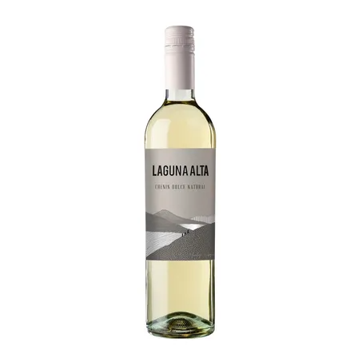
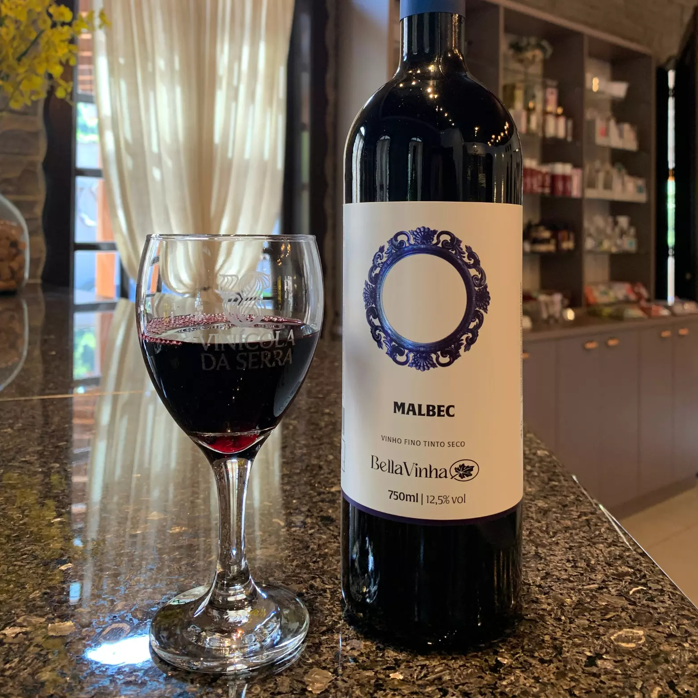
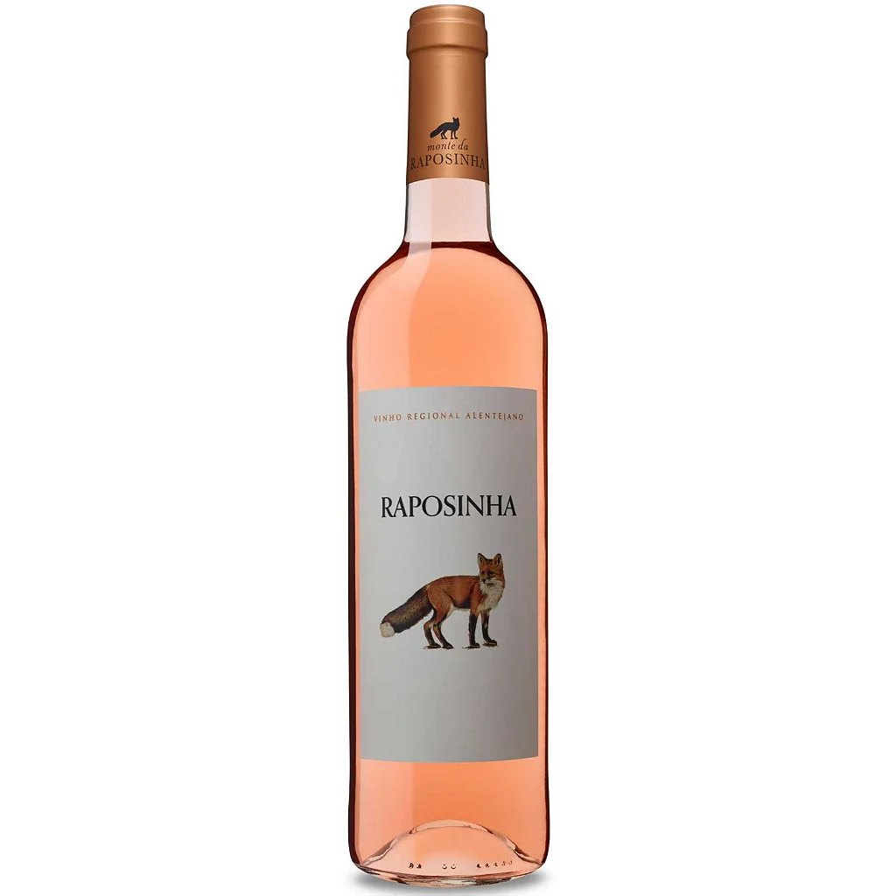
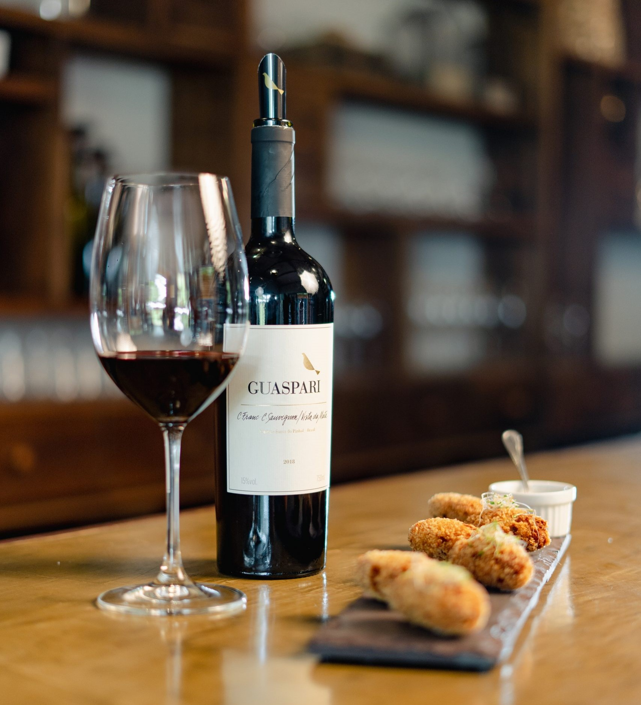

O vinho atravessa séculos de história, carregando tradição, cultura e sofisticação em cada taça.
Mais do que uma bebida, é uma experiência que conecta pessoas, momentos e sensações únicas.

R$ 200,00

R$ 100,00

R$ 99,90
A harmonização entre vinho e comida é essencial para uma experiência completa. Vinhos tintos combinam perfeitamente com carnes vermelhas e pratos mais intensos, enquanto vinhos brancos são ideais para peixes, saladas e refeições leves.
Escolher o vinho certo valoriza os sabores e transforma qualquer momento em uma experiência especial e sofisticada.
